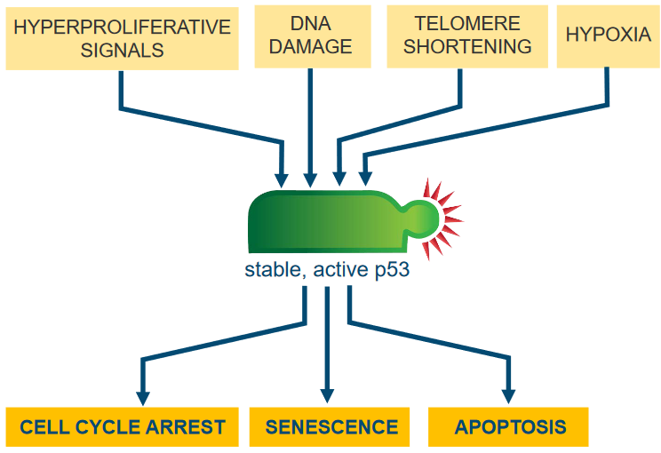
6 The p53 Protein
The thing about the p53 pathway is that it senses cell stress. Whenever p53 finds that the cell in question is undergoing some sort of environmental stressor, it does one of many things.
6.1 Mode of Action of p53
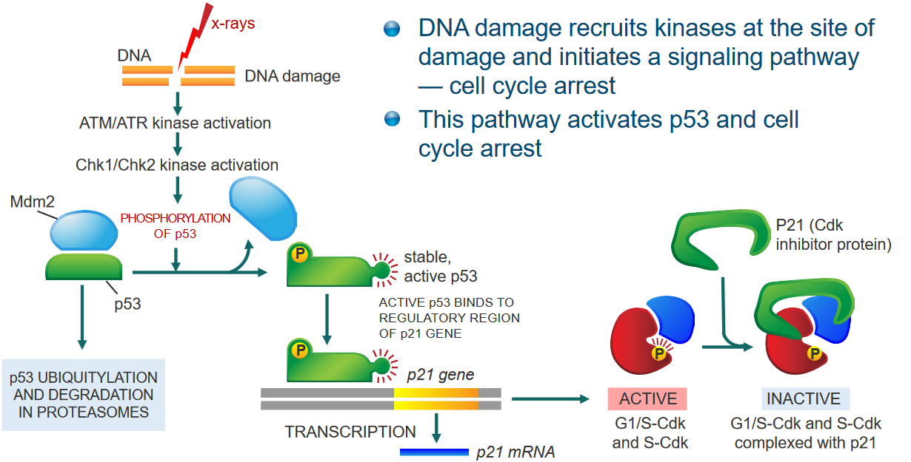
If there’s some sort of damage to the cell’s DNA, what can happen is that kinases are recruited to the site of the damage and cause the cell cycle to pause for a moment.
This cascade of events then results in the calling of p53 (and also stops the cell cycle).
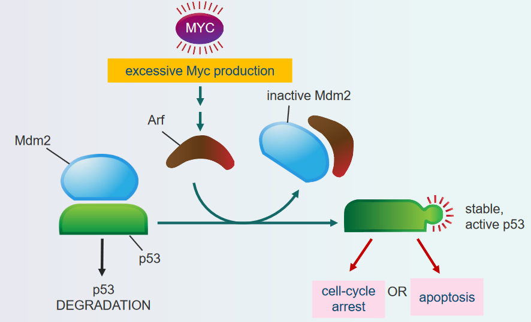
Otherwise, if too many mitogens are being produced, then this can also recruit p53.
So really, p53 regulates apoptosis - controlled cell death - by controlling important parts of both pathways inside and outside of the cell. And in doing so, p53 also regulates the transcription of the following proteins - all of which paly a role in apoptosis:
- Bid
- Bax
- puma
- Bcl-2
In all cases, the genes that encode for these proteins all have elements that are responsible for binding to p53.
6.1.1 Discovering the p53 Protein
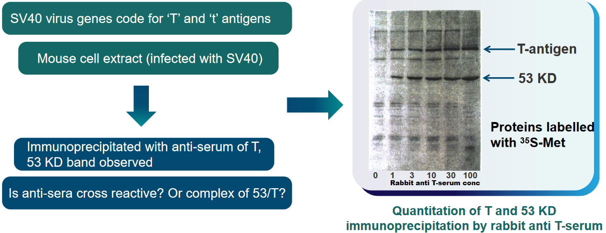
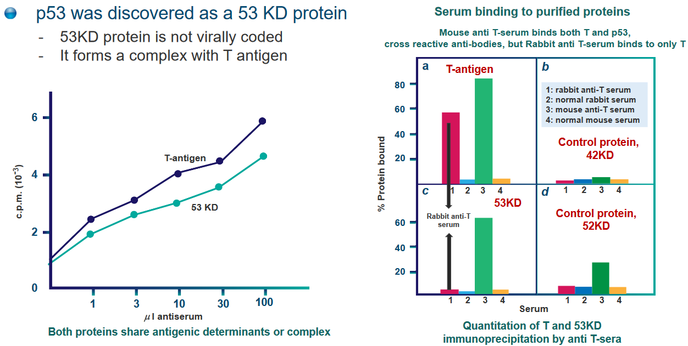
p53 was originally found as a 53 kDa protein - it was the first “tumor suppressor” gene that was found within our cells.
6.1.2 Overexpression of p53 in Cells
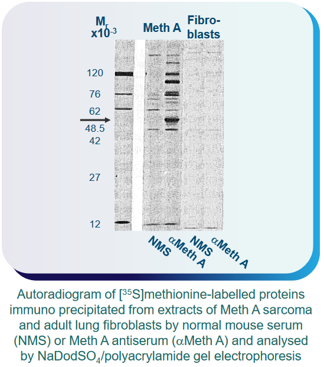
What scientists also found out was that this p53 protein - while not very abundant in normal cells - was over-expressed in cancerous and virus-infected cells.
As an example, something called F9 embryonal carcinoma cells initially have high levels of p53. When these cells are exposed to retinoic acid and dibutyryl cyclic adenosine 3’,5’-phosphate (i.e., cAMP), they change into endoderm-like cells with lower p53 levels. However, when these same cells are treated with something called SV40, their p53 levels increase again.
6.1.3 Regulating p53 Expression
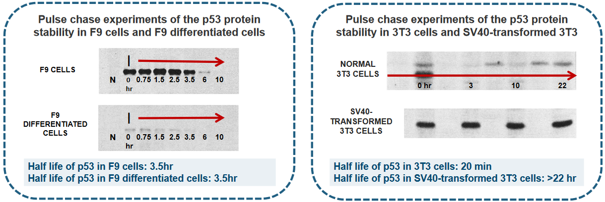
There were five main steps to the pulse chase experiment:
- Cells were labeled with 35S Methionine for 1 hour.
- After labeling, cells were rinsed with medium containing an excess of non-radioactive Methionine.
- Cells were then incubated at 37°C for a specified chase period.
- Soluble proteins were extracted and subjected to immunoprecipitation using either normal mouse serum (N) or a Monoclonal Antibody (MAb) against p53 (I).
- The proteins were separated using SDS-PAGE gel electrophoresis, and an autoradiogram was generated.
In different experiments, scientists can find that the amount of p53, which is a important protein in our cells, can be controlled in two main ways:
First, it can be controlled by the amount of instructions (like a recipe) called p53 mRNA, or second, by how long the p53 protein stays in the cell before it’s taken away.
This second part is managed by a process that carefully removes and recycles the p53 protein when it’s not needed anymore.
6.1.4 p53 in the Cell Cycle
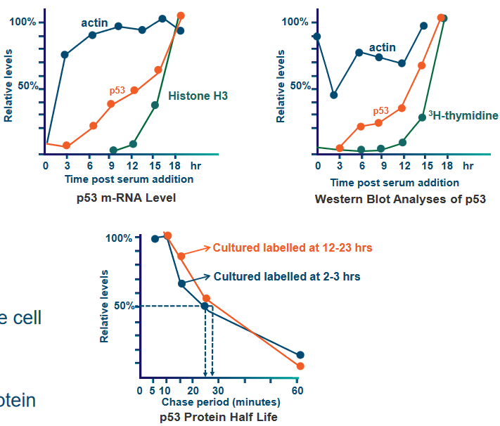
In something known as a resting 3T3 cell culture, they triggered cell activity by adding serum, which stimulates DNA synthesis. They then collected cellular extracts at various time points to analyze proteins, mRNA, and DNA.
Just before a cell goes into the S phase, the amount of p53 protein in the cell becomes 10 to 20 times more than usual. This increase happens in both early and late G1 phases of the cell cycle, and it matches the rise in the instructions (mRNA) for making p53 protein. So, when the cell is getting ready to copy its DNA, it produces a lot more p53 to help control the process.
6.2 Structure of Oncogenic p53
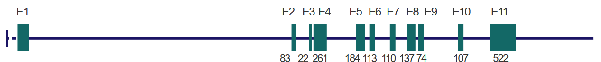
In many types of human cancer, a lot of people have changes in a gene called p53. These changes can happen in different ways and places, depending on the kind of cancer and what might have caused it, like things from inside the body or outside. In cancers called carcinomas, most of the changes in p53 result in a protein that’s not quite right because of misspellings (i.e., missense mutations) in the gene.
Changes in the p53 gene that affect how it works can happen all over the gene, especially in the middle part that’s very important and stays similar in different organisms. Other changes, like ones that make the protein shorter (i.e., frameshift mutations), usually happen in different parts of the gene. Also, it’s important to know that some specific changes are more common in certain tissues of the body.
In liver cancer, there’s often a change in the p53 gene where a G becomes a T at a specific place called codon 249, turning an R into an S. Also, in various types of cancer, there are common changes in p53 at certain spots, like codons 175, 249, 273, and 282, which make up a big part of the mistakes in the gene. In skin cancer, sunlight can make two Cs turn into two Ts. And when people smoke cigarettes, it can lead to changes where G and C swap to T and A, which can happen in colon cancer.
6.2.1 Does p53 Cause Tumors?
Short answer: yes.
P53 is active in cancer cells and plays a role when cells are growing and multiplying. It also interacts with a protein called Ras, which helps cells grow. Adding the p53 gene to cells can make them live longer, even forever. However, in some cases, like when mice get a virus that causes spleen tumors, the p53 gene can get mixed up and stop working correctly, which happens quite often.
In the early experiments, the p53 genes that were first cloned had changes in them that made p53 work in a harmful way. These changes were found in a part of p53 that’s really important for its shape and what it does in the cell. Later, in the late 1980s, more research showed that real, unchanged p53 actually helps stop tumors from forming, instead of causing them like an oncogene would.
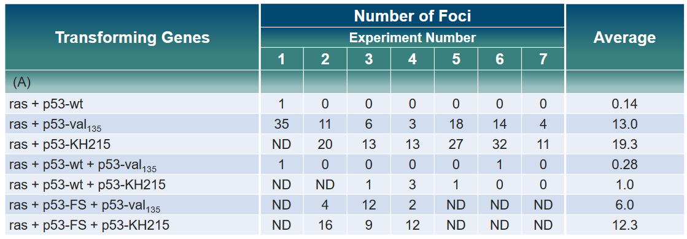
In the above experiment, rat fibroblast cells were given different versions of the p53 gene—normal p53, the cancer-causing ras gene, and a changed p53 called mutant p53 or p53-FS (frame shift). However, there wasn’t any noticeable difference in the levels of ras or mutant p53. For some parts of the experiment, the results weren’t determined (ND).
6.3 p53 and DNA Binding
6.3.1 p53 as a Sequence Specific Transactivator
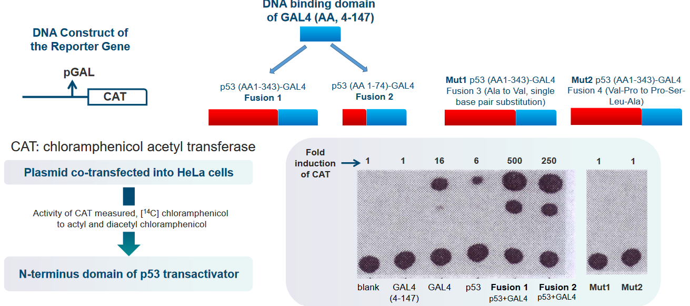
Researchers introduced a plasmid into HeLa cells as part of their experiment. Plasmids are small, circular pieces of DNA that scientists use to carry specific genes and manipulate them in cells. In this case, the scientists wanted to see what happens when a particular plasmid was added to HeLa cells.
To understand the results of their experiment, they measured the activity of an enzyme called CAT. Enzymes are like tiny machines that help with chemical reactions in cells. To do this, they used a special molecule called [14C] chloramphenicol. This molecule was transformed into two different forms: acetyl and diacetyl chloramphenicol, due to the action of the CAT enzyme. This allowed the scientists to see how active the CAT enzyme was in the HeLa cells and if it was changing the [14C] chloramphenicol.
Another part of their experiment involved something called the N-terminus domain of the p53 transactivator. The p53 protein is like a supervisor in the cell, making sure everything is working correctly. The N-terminus domain is a specific part of the p53 protein. The scientists were interested in how this domain was involved in the cell’s activities and whether it played a role in the changes they observed when they added the plasmid to the HeLa cells.
6.3.2 p53 in Binding to DNA
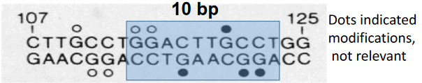
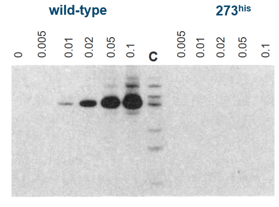
In this experiment, scientists were studying a protein called p53, specifically the “p53 WT” and a mutant version of p53, known as “Mutant p53 (273his).” These proteins are like the guards of our genetic information, and they can interact with DNA, which contains our genetic instructions.
The scientists found that “p53 WT” can attach itself to DNA, meaning it can bind to it. This is an important function because it helps in regulating and protecting our genetic material. On the other hand, the “Mutant p53 (273his)” couldn’t do this – it couldn’t bind to DNA like the normal, healthy version of p53.
To figure out where these proteins attach to DNA, the scientists used a technique involving human DNA fragments. They used special scissors-like molecules called restriction enzymes to cut the DNA into smaller pieces. These enzymes are like molecular scissors that chop the DNA into manageable sections. Then, they tagged these DNA pieces with a radioactive label called “32P.” This radioactive label helped the scientists track and locate the DNA pieces that p53 could bind to.
6.3.3 Gene Expression Under p53’s Influence
To understand how the p53 protein interacts with DNA and influences gene expression, scientists conducted an experiment. They wanted to see what’s needed for p53 to bind to DNA and activate the expression of specific genes.
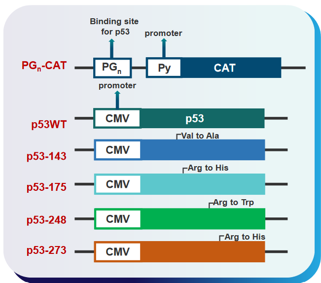
First, they used something called “expression plasmids.” Plasmids are like tiny vehicles that carry genes into cells. In this case, they carried the p53 gene and another gene called a “reporter gene.” The reporter gene is like a marker that helps scientists see if a gene is turned on or off. By using these plasmids, the researchers aimed to test whether p53 could directly activate gene expression through its interaction with DNA.
In their experiment, they wanted to find out if p53 had a specific spot on the DNA, which we can call a “DNA binding site,” that allowed it to control gene activity. They also wanted to see if altered or “mutated” forms of p53 could interfere with this activation. Mutated forms of proteins have changes in their structure, which can affect how they work.
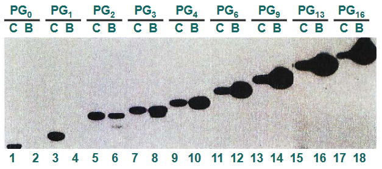
In this experiment, scientists were investigating how the p53 protein interacts with DNA and influences gene expression. They used a process called “gene expression in DNA binding of p53” to understand this.
First, they took the p53 protein and mixed it with DNA that had a special radioactive label, which is referred to as “32P labeled PGn repeats.” This label allowed them to track and locate where the p53 protein was binding to the DNA. To confirm that p53 was indeed binding to the DNA, they used an “Ab-p53,” which is short for “antibody to p53,” to detect the presence of p53 on the DNA.
The experiment involved different lanes on a gel, and each lane showed something specific. In “Lane C,” they had a control sample, which contained DNA labeled with 32P. This served as a reference to compare with the other lanes.
In “Lane B,” they had DNA that had bound to the p53 protein and was recovered from the complex they formed. This helped them confirm that p53 was indeed binding to the DNA.
6.3.4 Mutations in p53 and DNA Binding
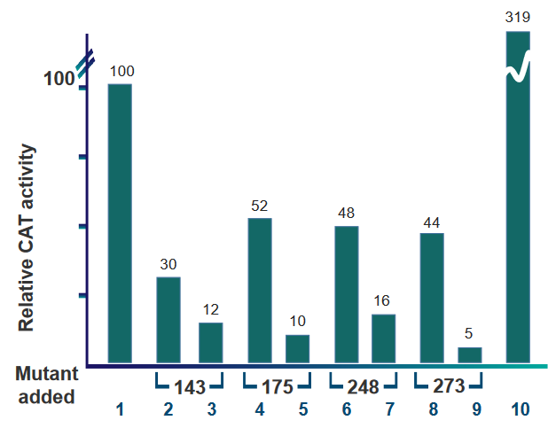
There are several key takeaways regarding the above barplot:
- Wild type p53 were used to create the barplot. The data in lanes 1 and 10 use wild type p53, but lane 10 uses double the amount of wild type p53.
- Lanes 2, 4, 6, and 8 all have wild type and mutant p53. There is an equal amount of wild type and mutant p53 in the plasmids used to make these lanes.
- Lanes 3, 5 ,7, and 9 also have wild type and mutant p53, but there is double the amount of mutant p53 than wild type p53 in the plasmids.
6.3.5 Consensus Sequence
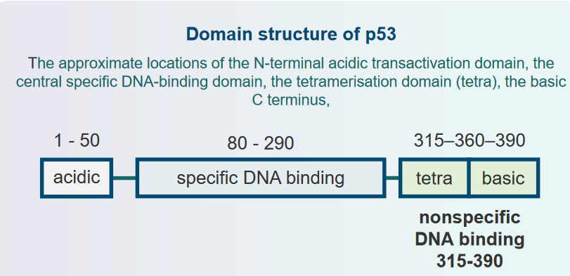
This sequence is: RRRCWWGYYY. This sequence is has a 0 to 13 base pair gap another copy of itself. The p53 protein basically forms a four-part complex (i.e., tetrameric complex) with DNA whenever it binds.
6.3.6 How does p53 Interact with DNA?
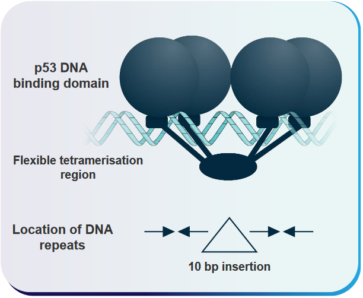
This explanation outlines a model that helps us understand how p53, a crucial protein in our cells, interacts with specific DNA sequences. This interaction is essential for regulating gene expression and maintaining our genetic information.
In this model, the “cylinders” located under the DNA-binding parts of p53 represent certain regions of the p53 protein. These regions are called “loop-sheet helix regions,” and they play a significant role in making specific connections with the building blocks of DNA within what we call the “major grooves” of a specific DNA site. Think of these “major grooves” as like the spaces between the rungs of a ladder where p53 can grab onto the DNA.
The “arrows” in the model show us how the central, round parts of the p53 protein (known as the “globular p53 core DNA-binding domains”) are oriented concerning the repeated DNA sequences they interact with. These repeated DNA sequences are 10 base pairs long, and they have a particular pattern: “5’-PuPuPuC(A/T)(T/A)GPyPyPy-3’.” Each of these 10-base-pair sequences can be separated by varying amounts of DNA, anywhere from none to 13 base pairs.
The key point here is that each “quarter site” within these 10-base-pair sequences can attach itself to one part of the p53 protein, forming a complex. This model helps us visualize how p53 binds to specific DNA sequences, which is crucial for controlling gene activity and making sure our genetic instructions are followed correctly.
6.3.7 Domain Organization of p53 and Ocurrence of Cancers
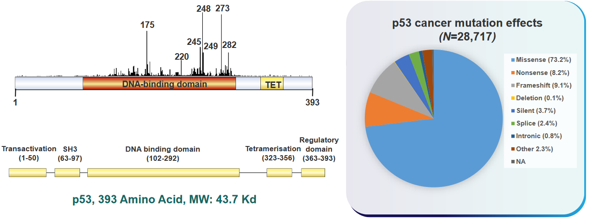
6.3.8 p53-DNA Complex
In this scientific study, researchers examined the three-dimensional structure of a complex formed between the p53 protein and DNA. This complex is essential for understanding how p53 influences the expression of genes, which are the instructions for making proteins in our bodies.
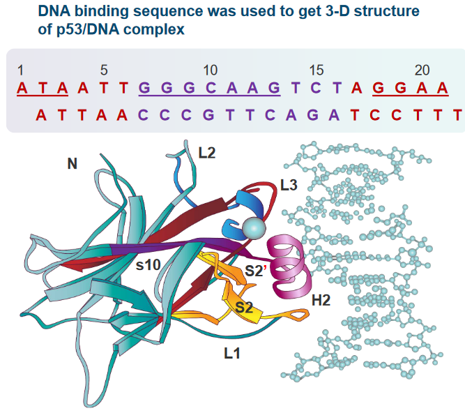
The crystal structure of this complex revealed some important details. The “core domain” of the p53 protein primarily attaches itself to a specific sequence of DNA, which is called a “pentamer consensus sequence.” This sequence is made up of five DNA building blocks (pentamer) and has a specific pattern: “PuPuPuC(A/T)-(T/A)G.” The core domain of p53 interacts extensively with the bases and phosphate groups of this DNA sequence.
What’s interesting is that not only does the core domain attach to this specific pentamer consensus sequence, but it also connects with base pairs that are located outside of this pentamer sequence. This suggests that not just one pentamer, but part of another pentamer (the adjacent one) is also needed for the binding to occur.
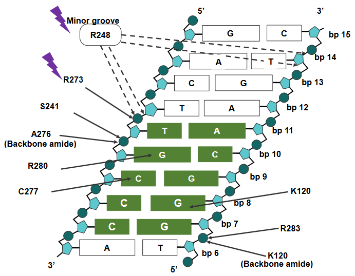
In this description, scientists are talking about how specific parts of the p53 protein interact with DNA, which is crucial for controlling gene expression and maintaining our genetic information.
First, they mention “R248,” which is a specific region of the p53 protein. R248 is known to attach itself to the “minor groove” of DNA. The minor groove is like a narrow space in the DNA’s structure. R248 interacts with a specific DNA sequence that is rich in “AT” base pairs. Additionally, it forms what are called “salt bridges” with the sugar-phosphate backbone of the DNA. Think of these salt bridges as molecular connections that help hold the p53 protein in place on the DNA.
Next, they discuss “R273,” another part of the p53 protein. R273 binds to the “major groove” of DNA, which is a larger space in the DNA’s structure compared to the minor groove. Like R248, R273 also forms salt bridges with the sugar-phosphate backbone of the DNA. These connections help anchor the p53 protein in its place on the DNA.
In addition to these DNA interactions, R273 is also involved in other interactions within the p53 protein itself. For example, it forms a salt bridge with a molecule called “Asp.” These interactions are important because they help p53 function correctly in regulating gene expression and other cellular processes.
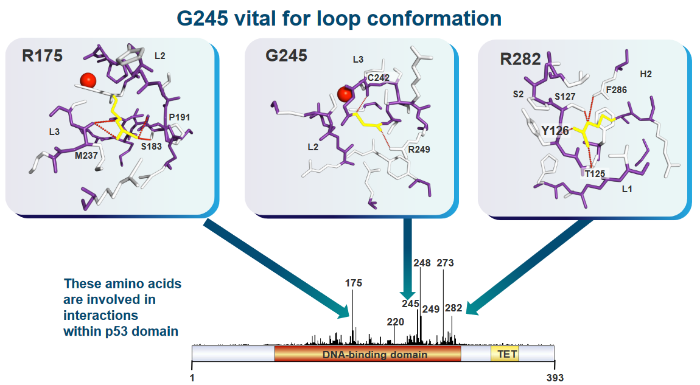
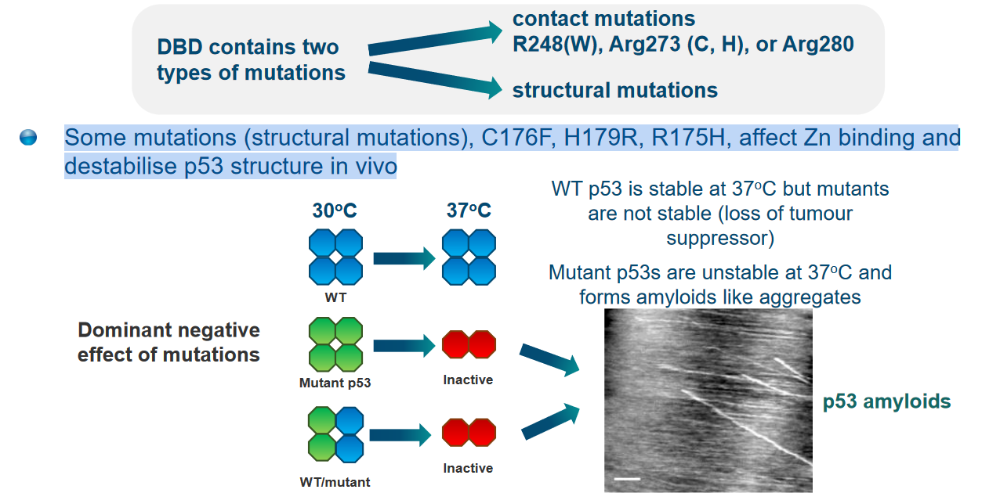
Some structural mutations of p53 can weaken the structure of p53 in the cell (i.e., in vivo).
6.4 p53 and Murine Double Minute (i.e., MDM2) Interactions
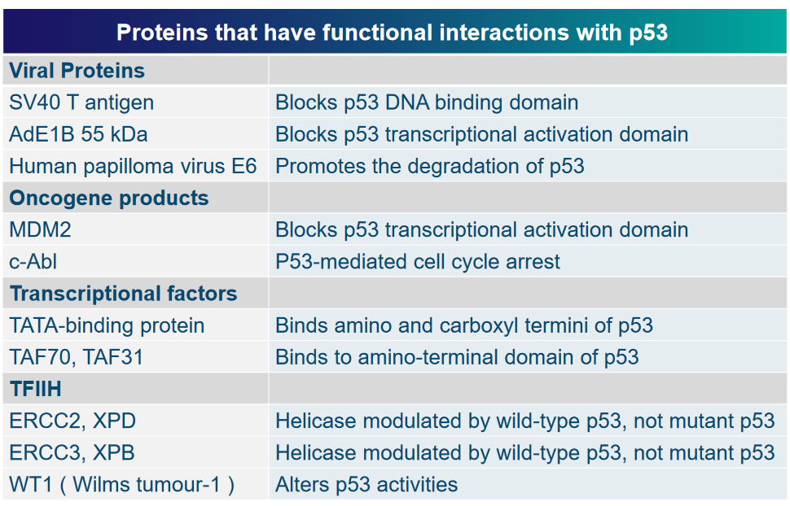
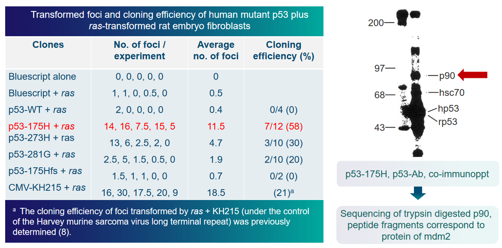
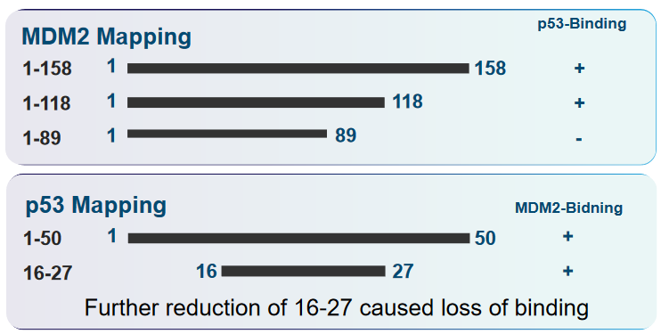
The transactivation domain is like a control center within p53, responsible for activating other genes in the cell. When MDM2 interacts with p53, it inhibits p53’s ability to carry out this transactivation process, essentially putting a brake on p53’s function.
To understand this regulation better, the scientists conducted an experiment. They looked at the activity of a “reporter gene” in the presence or absence of MDM2. The reporter gene is a marker used to measure the activity of p53. By examining this reporter gene’s behavior with and without MDM2, they could determine how MDM2 affects p53’s ability to activate other genes.
6.4.1 MDM2 in Cancer Cells
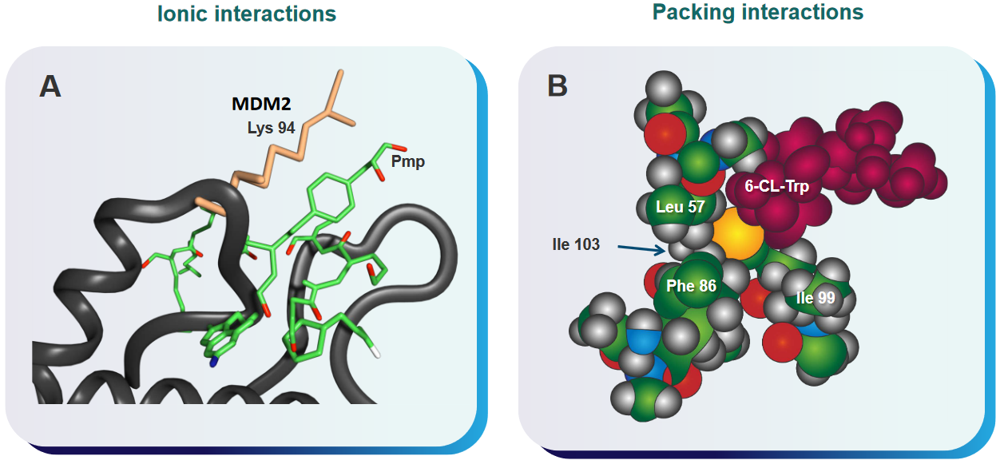
First, it’s important to know that MDM2 is often found in higher amounts in many cancer cells. This overexpression of MDM2 can be problematic because MDM2 can bind to p53 and prevent it from functioning properly. P53 is a protein that acts as a guardian of our DNA, ensuring that our cells don’t grow out of control and become cancerous. When MDM2 interacts with p53, it suppresses p53’s activity, which can be harmful in the context of cancer.
To counteract this, scientists are exploring the development of “p53-MDM2 inhibitors.” These are substances or drugs that can block the interaction between p53 and MDM2. By limiting these interactions, it’s possible to activate p53, allowing it to carry out its essential role in controlling cell growth and preventing cancer development.
6.4.2 Small Molecule Inhibitors of MDM2
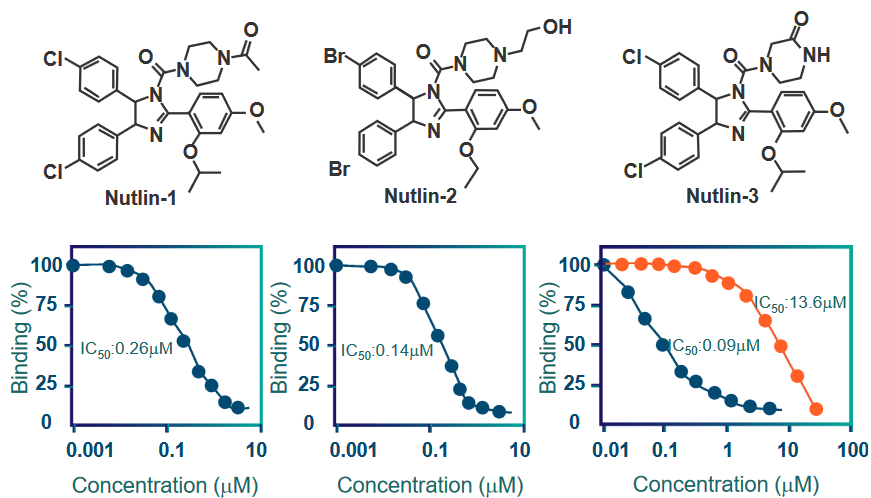
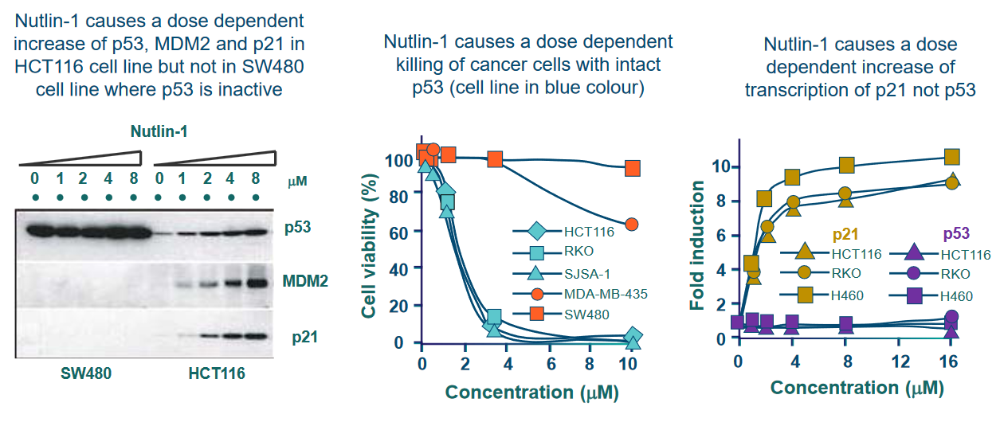
MDM2 is a protein that plays a role in regulating another important protein called p53, which is known as the “guardian of the genome” because it helps maintain the stability of our DNA and prevent the development of cancer.
The researchers found that nutlins have a strong ability to bind to MDM2, and they do so at a specific location called the “p53 binding site.” This binding interaction between nutlins and MDM2 occurs with high affinity, meaning they stick together very tightly.
6.5 Reactivating Mutant p53
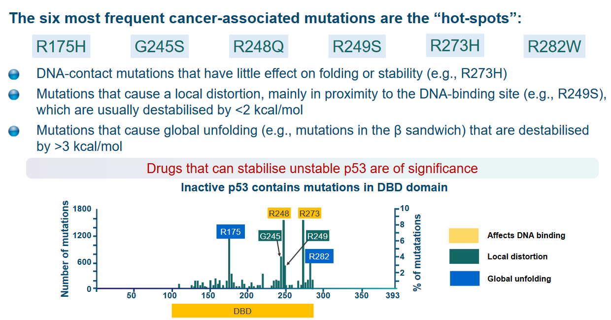
They mention three different types of mutations in this context:
DNA-contact mutations (e.g., R273H): Some mutations in the p53 protein affect its ability to make contact with DNA. These mutations don’t have a significant impact on the overall shape or stability of the protein.
Local distortion mutations (e.g., R249S): Other mutations cause a distortion in the structure of the protein, mainly near its DNA-binding site. These mutations tend to make the protein less stable, but the destabilization is relatively minor, less than 2 kcal/mol (kilocalories per mole).
Global unfolding mutations (e.g., mutations in the β sandwich): Some mutations cause a widespread disruption in the protein’s structure. These mutations result in a significant destabilization of the protein, exceeding 3 kcal/mol.
6.5.1 Peptide-Based Rescues
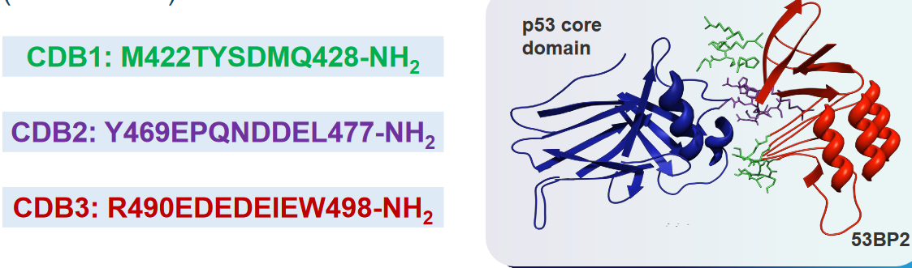
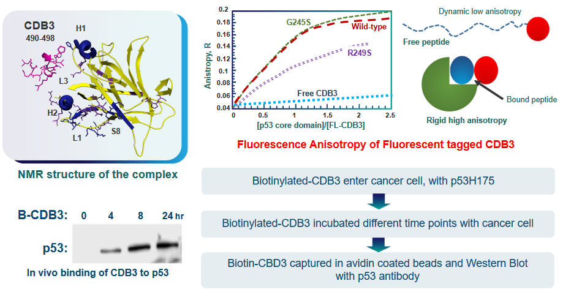
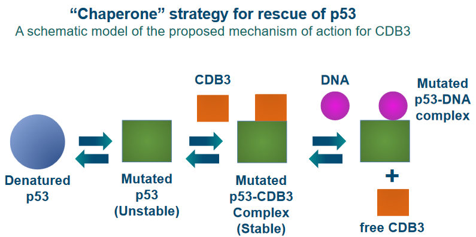
To achieve this reactivation, scientists are working on the design of certain peptides. Peptides are like short chains of amino acids, the building blocks of proteins. These peptides are created to interact with the mutant p53 protein and potentially restore its function.
In their study, they focus on a protein called 53BP2, which is known to bind to p53. This interaction enhances the ability of p53 to activate genes and specifically promotes its role in causing cell death (apoptosis).
53BP2 binds to p53 at the same spot where p53 usually binds to DNA. This binding site involves three specific regions, referred to as “loops,” that make direct contact with p53.
To design peptides that can mimic this interaction, the researchers synthesized three different peptides corresponding to these three loops, which they labeled as CDB1, CDB2, and CDB3.